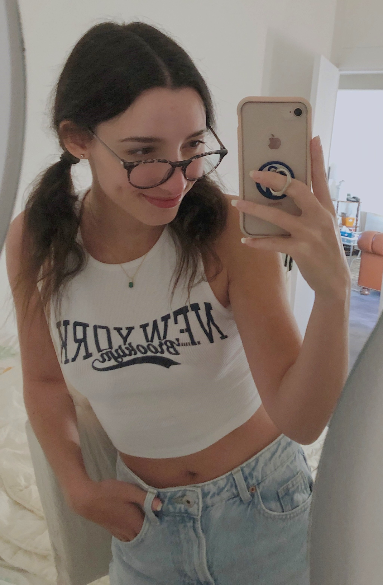
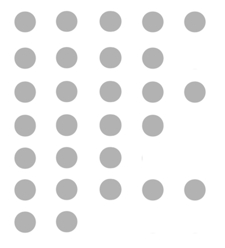

Profile
Work and associative experiences
Education
Skills
Interests
References

OCEANE
MOLLET QUERARD
Student (19)
Nantes
0762535441
oceane.querard@gmail.com
Hire me!
I am a young student eager to learn and discover the world. I am currently studying for a bachelor’s degree in business school at Audencia, and I'm very happy there. Interested in everything that surrounds me, I want to immerse myself little by little in the world of work so that I can better project myself into the future. For now, my goal is to have as many experiences as possible. Whether personal, professional, academic, social or cultural experiences. At the end of my three years of bachelor' degree, I would probably like to continue towards a master's degree, because of my love of learning. Maybe in one of the major international business and management schools, maybe specialize in communication, design or marketing, or maybe in finance. I don't really know right now. Only time will tell. That's who I am, nice to meet you !
January to march 2022 : Sales hostess, Domaine Skiable Saint-Gervais Mont-Blanc, Les Alpes, France
o Sale of ski passes, advice to customers, management of the cash register and collection, updating of customer files, preparation of internet orders.
o Turnover of 558 000 € in 2 months and a half.
September to december 2021 : Logistics volunteer, Les Restos du coeur, Nantes, France
o Preparation of meals, inventory of stock, distribution in the street, exchanges with people, product collecting in supermarkets.
October 2017: Waitress, Bistr’Océan, Rezé, France
o My duties included the reception of customers, the taking note of orders,the service of the cafes as well as the setting up and cleaning of the tables…
o It was an enriching internship where I was able to develop my interpersonal skills with customers, where I was able to discover real teamwork but also the fact of working under pressure but in a fast and efficient way.
October 2017: Reporter, Ouest France, Nantes, France
o I wrote articles, I took notes during interview, Iparticipated in editorial meeting…
o This internship allowed me to improve my writing skills but also to develop my autonomy and my notetaking.
2021 to present: Currently in 2nd year of a Bachelor in Management (three-year undergraduate degree), Audencia Business School, Nantes.
o I study accounting, law, economics, foreign languages, marketing, sales, web design, financial analysis, geopolitics, cultural management, coding, CSR, business strategy...
o Academic exchange semester planned for 2023 in the United States.
o Final exam to be taken in June 2024.
2018 - 2021: Baccalauréat with honours (French secondary school diploma), Alcide d’Orbigny, Bouaye, France
o Specializing in economics and social sciences / history, geography, geopolitics, and political science / humanity, literature, and philosophy.
o Mention "Good" in the diploma, the second highest mention.
Languages
FRENCH [C2] : Native speaker
ENGLISH [B2] : Upper intermediate written and oral skills (TOEFL of 76/120)
SPANISH [A2] : Pre-intermediate written and oral skills
KOREAN AND JAPANESE [A1] : Beginner
Computing

PACK OFFICE
PACK ADOBE
SOCIAL MEDIA
FIGMA
HTML/CSS
WINDOWS
MAC/OS
Qualities
Motivated, curious, organized, learns quickly, rigorous, communication skills, autonomous, adaptability, versatile.
Photography and video
I had the opportunity to do a photo shoot and a promotional video for a clothing brand for an entrepreneur friend, regular photo shoots for a model friend's portfolio and a music video for a musician friend.
Design
I really enjoy making presentation, poster, website, application. I have a very picky eye which allows me to make fairly precise renderings while being aesthetic.
Reading
I love to read all kinds of books like novels, classics, mangas in french and in english. This allowed me to have a very good concentration, attention and written skill.
Travelling
I had the opportunity during the holidays to visit several countries like Spain, Italy, Greece, Tunisia. I was able to better discover the culture of these countries, sometimes very different from the France.
References available upon request.